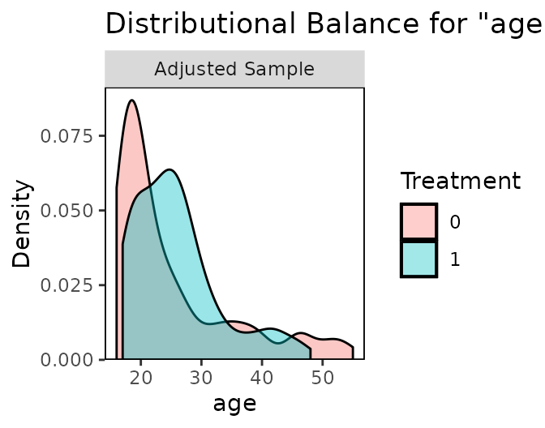
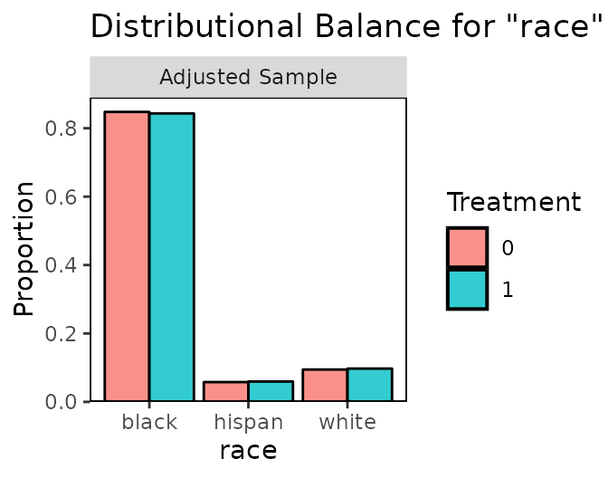

5 Assessing quality
A key step in propensity score analysis is assessing the quality of the matching or weighting specification. These methods are only effective at removing bias due to confounding when certain conditions are met, which we describe here. The three most important attributes used to assess a conditioning specification are 1) balance, 2) representativeness, and 3) effective sample size. We describe each of these in the following sections.
5.1 Covariate Balance
Balance is the degree to which the treatment groups resemble each other on the covariates. A fully balanced sample is one in which the distributions of covariates in the treatment groups are identical. When balance is achieved, bias due to confounding by the observed confounders will be eliminated. Balance is central to the use of propensity score methods (Ben-Michael et al. 2021); indeed, the entire point of using these methods is to achieve balance. The primary benefit of randomization is that confounders (both observed and unobserved) are balanced by design (in expectation); propensity score methods seek to mimic this quality by adjusting the sample so that balance is achieved (though only on the observed covariates).
In theory, conditioning on the propensity score via matching or weighting should yield balance in the sample (Rosenbaum and Rubin 1983); this is the key balancing property of propensity scores and why they are popular in the first place. However, in practice, they don’t always yield balance, which can be due to a number of factors, including that the propensity score model (if one is used) is misspecified, the conditioning method is not suited for the data used, or balance fundamentally cannot be achieved while retaining the desired estimand. Therefore, it is critical that balance be assessed before moving forward with effect estimation.
This is what Ho et al. (2007) describe as the “propensity score tautology”: conditioning on a good propensity score yields balance in the sample, but whether a propensity score is good depends on whether it yields balance. The implication of this is that we cannot rely on the theoretical balancing properties of the propensity score; we need to empirically ensure that the conditioning specification is doing its job.
Full balance means balance not just on individual covariates but on the full, joint distribution of covariates. For example, it may not be enough to have the same proportion of women and the same proportion of Black patients in the treatment groups; full balance requires the same proportion of Black women, non-Black women, Black men, and non-Black men in the treatment groups. Full balance can be hard to achieve and hard to assess, so most balance assessment methods focus on the “marginal” (i.e., single-covariate) distributions; if balance is not achieved on individual covariates, it is not achieved on the full joint distribution either.
Balance can be assessed graphically or numerically, and among numerical assessments, there are univariate statistics (one covariate at a time) and multivariate statistics (multiple covariates at a time).
5.1.1 Graphical balance assessment
The most straightforward assessment of whether the distribution of a covariates is the same in the two treatment groups is simply to plot the distributions of the covariates and note any differences. Examples of distribution plots include histograms, kernel density plots, empirical cumulative distribution function (eCDF) plots, and bar graphs (for categorical variables). Dramatic differences in these plots suggests severe imbalance that must be corrected.
See below fo an example taken from the documentation for the R package cobalt. The top panel shows the distributions of age in the treated and untreated groups, on which some imbalance remains because the distributions are not identical.

In the bottom panel, the distribution of categories of race is almost identical between the treated and untreated groups, indicating good balance on this covariate.

5.1.2 Univariate balance statistics
Univariate balance statistics describe the difference in the distributions of one covariate at a time numerically. For binary covariates, the difference in the proportion of each category across treatment groups is an example of univariate balance statistic (called the raw difference in proportion). For continuous variables, several univariate balance statistics are commonly used:
Standardized mean difference (SMD): \(\frac{\bar{x}_1-\bar{x}_0}{s}\), where \(s\) is a measure of spread computed in the unadjusted sample. The SMD does not depend on the scale of the covariate and only assess differences in the covariate means, not other features of the distributions. Ideally these are as small as possible (Ho et al. 2007), though some authors recommend that they should be below .1. SMDs are the most commonly reported balance statistic.
Variance ratios: \(s^2_1/s^2_0\). This complements the SMD by assessing balance on the variability of the distribution, not just the means. Ideally these are as close to 1 as possible.
Kolmogorov-Smirnov (KS) statistics: \(\text{max} \left( |F_1(x) - F_0(x)| \right)\), where \(F(x)\) is the eCDF of \(x\). This assesses balance on the entire marginal distribution of the covariate, not just the means or variability. Ideally these are as small as possible.
These statistics should also be computed not just on each covariate, but also on transformations of it, such as the square or cube or interactions between covariates (Austin and Stuart 2015).
Balance should not be assessed on the propensity score itself; not only is this a conceptually invalid way to assess balance because a propensity score can only be considered useful when it balances the covariates (Ho et al. 2007), empirically there is no association between balance on the propensity score and low bias in the effect estimate (Stuart, Lee, and Leacy 2013). The propensity score is sometimes used a heuristic to assess overlap (e.g., to assess whether the failure of propensity score weighting or matching is due to large differences in the propensity score distribution between groups) and to assess why a matching method might be failing (e.g., if nearest neighbor matching cannot even balance the propensity scores, it has little hope for balancing the covariates).
5.1.3 Multivariate balance statistics
A multivariate balance statistic is a single (scalar) number that attempts to summarize balance for a sample. They are used less often in assessing balance and more to compare balance between conditioning specifications. Examples include the largest or average absolute SMD across covariates and the largest or average KS statistic across covariates. Some multivariate balance statistics attempt to assess balance not just on the marginal covariate distributions but on the joint distribution; examples include the \(L_1\) statistic (Iacus, King, and Porro 2011), which sums raw differences in proportion across a multi-dimensional histogram of the covariates, and the energy distance (Huling and Mak, n.d.), which computes the average distance between the joint covariate eCDFs. These statistics are not typically reported because their scale depends on the distribution and number of covariates, but they can be used to compare between specifications.
5.1.4 Don’t use p-values
One might be tempted to use a hypothesis test to assess whether the distributions of the covariates differs between groups. For example, one might use the p-value on a t-test, chi-square test, Mann-Whitney U test, or KS test to test whether two distributions are the same. One should not do this to assess balance in observational studies, either before or after conditioning. There are several reasons to avoid p-values:
Hypothesis tests typically make reference to a population distribution, but balance is a quality of the sample
Hypothesis tests depend on the sample size, so shrinking your sample size (e.g., through subset selection) will appear to make balance better even if it makes it worse
P-values suggest a significance threshold that might be invalid; \(p = .1\) might still indicate severe imbalance despite being nonsignificant (at the \(\alpha = .05\) level).
Instead, use the sample balance statistics described above. See Imai, King, and Stuart (2008) and Ali et al. (2015) for further explanation on why p-values should not be used or reported.
5.2 Representativeness
Representativeness refers to how generalizable an effect estimate is to the population for whom one wants to make inferences. Even if the original sample is representative of a meaningful population (e.g., all patients with a given disease), matching or weighting may distort the sample in such a way as to change its representativeness. The reason this is so critical to consider is that different methods exchange representativeness for balance; for example, matching with a caliper or using overlap weights both change the target population to one that differs from the full sample or one of the treatment groups, but in doing so general dramatically improve balance, especially when the groups are very different from each other.
Representativeness can also be thought of as balance between the adjusted sample and the original sample (or target population), and can be assessed in the same way, i.e., by examining the differences in covariate distributions between the adjusted sample and the target population. This is sometimes known as “three-way” balance, i.e., balance between the treated and control groups, between the treated group and the target population, and between the control group and the target population (Chan, Yam, and Zhang 2016). Typically, this is done by simply examining the distribution of covariates in the adjusted sample and in the target population and assessing heuristically whether they are close enough for the inference to be informative.
In some cases, representativeness is less important than ensuring groups are comparable, such as when attempting to discover whether treatment exists for any group rather than for a specific group (Mao, Li, and Greene 2018). In these cases, ensuring representativeness is less critical, but it remains important to understand for which population the estimated effect generalizes.
5.3 Effective sample size
Matching via subset selection discards units, which leaves the remaining sample smaller than the original sample. In some cases, many units are discarded, and the remaining sample is too small to detect effects. Thus, it is important that any matching method not only achieve balance (and representativeness) but also preserve sample size.
It might seem like weighting, full matching, or subclassification would prevent this problem because no units are discarded with these methods, but the weights resulting from these methods actually do induce a decrease in precision similar to shrinking the sample size. To capture this effect, the effective sample size (ESS) is used, which corresponds to the size of a hypothetical unweighted sample that carries as much precision as the weighted sample (Ridgeway 2006).
The ESS is computed in each treatment group as \(\left(\sum_n{w}\right)^2/\sum_n{w_i^2}\). When weights are scaled to have a mean of 1 in each treatment group, the ESS can be written as \(\frac{n}{1+\text{Var}(w)}\), which makes it clear that as the variability of the weights increases, the ESS decreases. When all weights are equal to 1 (e.g., prior to estimating propensity score weights), the ESS is equal to the original sample size.
When a weighting or matching specification yields an ESS that is too small to use for inference, this suggests a problem with the conditioning specification that should be rectified. A low ESS typically arises from highly variable weights, which can occur when some units have very small or very large propensity scores; this is known as the problem of “extreme weights”, for which multiple solutions have been proposed. These solutions include using a different model to estimate the weights (e.g., using logistic regression instead of a classification tree), changing the estimand (e.g., targeting the ATO rather than the ATE), trimming the weights (which can change the estimand as well), or using a method that specifically aims to reduce the variability of the weights, like stable balancing weights (Zubizarreta 2015) or entropy balancing (Hainmueller 2012).
One often finds that balance, representativeness, and ESS pull in opposite directions, which requires users to manage a trade-off between bias, generalizability, and precision. For example, matching with a caliper often yields excellent balance but, by dropping units from both treatment groups, worsens representativeness and decreases the ESS. Propensity score weighting for the ATE may ensure representativeness, but it may be hard to achieve balance, and if one does, it may be that that balance comes at the cost of a decreased ESS due to extreme weights. There is no single method that can perfectly optimize all three, but the best methods allow the user to incorporate substantive information into making these trade-offs to best suit the data at hand and research question.